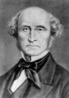

John Stuart Mill (1806–1873) küçük yaşlarından itibaren büyük bir filozof olacak şekilde yetiştirilmişti. Babası İskoç radikali James Mill (1773–1836), çocuğuna üç yaşında Yunanca’yı ve sekiz yaşında Latince’yi öğretmişti. On yaşına geldiğinde Plato’yu Yunanca aslından okuyabiliyordu. On iki yaşındayken babasının yönlendirmesi doğrultusunda Orta Çağ skolastiği çalışmaya başladı. Dikkatinin dağılmasını önlemek için başka çocuklarla oynamasına izin verilmiyordu.

Bu yetiştirme modeli Mill’i yorgun düşürmüştü. Yirmi yaşında ruhsal problemler yaşamaya başladı. Ancak aynı zamanda tam da babasının istediği gibi 19. yy’ın önemli filozoflarından biri ve Faydacılık olarak adlandırılan İngiliz felsefe geleneğinin önemli bir temsilcisi oldu.
Depresyondan çıktıktan sonra Mill 1820’lerin büyük bölümünü seyahat ederek geçirdi. 1830 yılında Harriet Taylor (1807–1858) ile tanıştı. Kadın evli olmasına rağmen ikisi arasında bir ilişki başladı. Bu durum babasını dehşete düşürmüştü. Çift yirmi yıl boyunca yakınlıklarını devam ettirdiler ve Harriet’in eşinin ölümünün ardından, 1851 yılında evlendiler.
Mill’in ilk felsefi eseri A System of Logic (Mantık Sistemi) 1843 yılında yayınlandı. Bunu 1848 yılında basılan Principles of Political Economy (Politik Ekonomi Prensipleri) izledi. Bu kitap onu İngiltere’nin önde gelen liberalleri ve faydacıları arasına yerleştirdi. Faydacılar bir eylemin ahlakiliğini onun toplumsal mutluluğa yaptığı katkı ile ölçüyordu. Bu felsefe okulunun mensupları genellikle “daha fazla kişi için daha fazla iyilik” sloganı ile özdeşleştiriliyordu.
Faydacılık Mill’e siyasi meselelerde radikal kabul edilen bir tavır takınma imkanı sağladı. Seçim reformu yapılmasını, İrlanda’ya yönelik baskıların azaltılmasını, kadınlara ekonomik ve politik haklar tanınmasını savundu.
Mill 1858’e kadar İngiliz Doğu Hindistan Şirketi için çalıştı. Bu şirket İngiltere’nin Hindistan ticaretini kontrol ediyordu. Ardından politikaya atıldı ve 1865 yılında Avam Kamarası’na seçildi. Kadınlara oy hakkı verilmesini savunan ilk yasa tasarısını destekledi. Ancak başarısız oldu. Parlamentoya yeniden seçilemedi. Cinsiyet eşitliği ile ilgili görüşlerini ünlü kitabı The Subjection of Women’da (Kadının Bağımlılığı) 1869 yılında yayınladı. Mill, Fransa’da altmış altı yaşında öldü.
Ek Bilgiler
1- Mill 1865 ve 1868 yılları arasında İskoçya’daki Saint Andrew Üniversitesi’nde rektörlük yaptı.
2- Filozof Bertrand Russell’ın (1872–1970) vaftiz babasıydı.
3- 1928 yılına kadar İngiltere’deki kadınlar tamamen özgürleşemediler. Eşit oy hakkı Mill’in onu savunmasından ancak altmış küsur yıl sonra uygulamaya konulabildi.